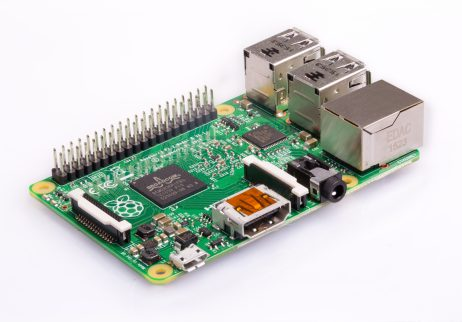

Introdución a Sonic Pi
O computador como instrumento
Que é a asociación DATA?
DATA é o acrónimo de
Dezás Amigos das Tecnoloxías Abertas.
Unha asociación para a difusión do coñecemento de tecnoloxías baseadas no software libre, hardware libre, cultura libre, ...
Que é Sonic Pi?
“Sonic Pi é unha contorna de programación de código aberto, deseñada para explorar e aprender conceptos de programación a través do proceso de creación de novos sons. É un sintetizador libre para todo o mundo creado por Sam Aaron.”
Que é Raspberry Pi?
Raspberry Pi é un computador baixo custo desenvolvido co obxectivo de estimular a ensinanza de ciencias da computación nas escolas.
Interface
Atallos de teclado
| Alt + R | Executar (Run) |
| Alt + S | Parar (Stop) |
| Alt + / | (Des)comentar código |
| Ctrl + i | Información da palabra seleccionada |
Imos dar a nota
# Escribimos o seguinte código no editor
# a linguaxe de programación é Ruby
play 60 # Tamén podemos poñer :C , 'C' ou :C4
Notación anglosaxona
Equivalencia numérica das notas
Cal é o Do central?
Duración


Unha escala (versión 1)
play 60 # Do equivale a :C ou :C4
sleep 1
play 62 # Re, :D
sleep 1
play 64 # 'Mi', :E
sleep 1
play 65 # 'Fa', :F
sleep 1
# ... 67 'Sol', 69 'La', 71 'Si'
play 72 # 'Do'
sleep 1
Unha escala (versión 2)
# As notas como números
notas=[60, 62, 64, 65, 67, 69, 71, 72]
# As notas como notación anglosaxona, OLLO ao :C5
#notas=[:C, :D, :E, :F, :G, :A, :B, :C5]
play_pattern notas
# Alterando duración
duracion=[0.5, 0.5, 0.5, 0.5, 0.5, 0.5, 0.5, 0.5]
# Outra forma de escribir a liña anterior
#duracion=Array.new(8, 0.5)
play_pattern_timed notas, duracion
Imos "programar" unha canción
- Ritmo de batería
- Pista do baixo
- Pista principal
- Engadimos "improvisación" (aleatoriedade)
Ritmo de batería (live_loop)
live_loop :drums do
sample :drum_heavy_kick
sleep 1
end
Ritmo de batería (bombo e caixa)
live_loop :drums do
sample :drum_heavy_kick
sleep 1
sample :drum_snare_hard
sleep 1
sample :drum_heavy_kick
sleep 1
sample :drum_snare_hard
sleep 1
end
Ritmo de batería (charles)
live_loop :hihat do
sample :drum_cymbal_closed
sleep 0.25
sample :drum_cymbal_pedal
sleep 1
end
Pista baixo
live_loop :bass do
use_synth :fm
play :c2, attack: 0, release: 0.25
sleep 0.25
play :c2, attack: 0, release: 0.3
sleep 2
play :e2
sleep 0.75
play :f2
sleep 1
end
ADSR (attack, decay, sustain, release)

Pista principal
live_loop :melody do
play_pattern_timed [:c4, :e4, :f4, :g4, :f4, :e4, :f4, :g4, :f4, :e4, :f4], [0.25, 0.25, 0.25, 1.5, 0.25, 0.25, 0.25, 0.25, 0.25, 0.25]
end
"Improvisación"
live_loop :melody do
if one_in(6)
use_transpose 2
else
use_transpose 0
end
play_pattern_timed [:c4, :e4, :f4, :g4, :f4, :e4, :f4, :g4, :f4, :e4, :f4], [0.25, 0.25, 0.25, 1.5, 0.25, 0.25, 0.25, 0.25, 0.25, 0.25], attack: 0, release: 0.2
end
live_loop :bass do
use_synth :tb303
play (chord :C2, :major).choose, release: 0.125, cutoff: rrand(60, 110)
sleep 0.25
end